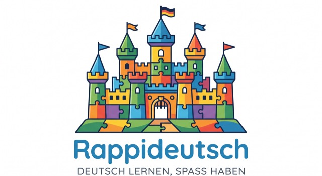
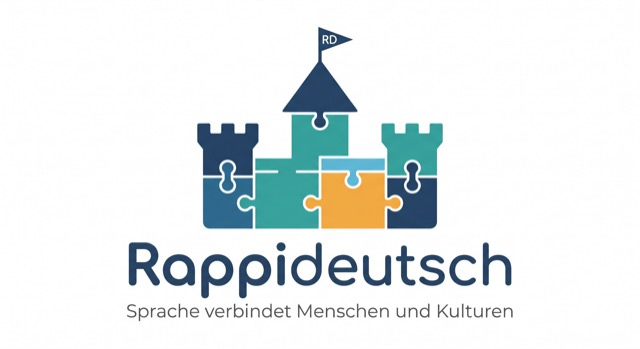
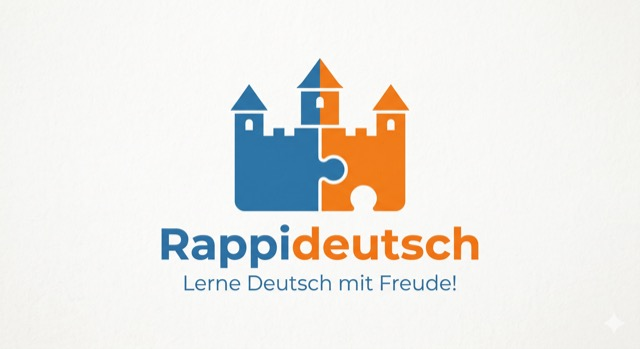
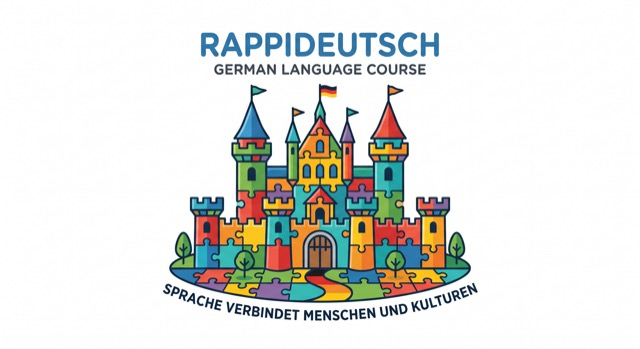

Logo & Foto – deine Meinung ist gefragt
Diese Seite ist nur für Marias Kolleginnen und Kollegen gedacht — sie ist nirgends auf der öffentlichen Webseite verlinkt.
Unten seht ihr das aktuell verwendete Logo und Foto, daneben ein paar Varianten, die nicht auf der Webseite gelandet sind. Sagt Maria einfach direkt (WhatsApp, persönlich, etc.), was euch am besten gefällt — auch "die aktuelle Wahl ist top" ist eine hilfreiche Antwort.
Logo
Vier weitere Konzepte, die beim Design ausprobiert, aber nicht verwendet wurden.
Aktuell im Einsatz

Konzept 1

Konzept 2

Konzept 3

Konzept 4
Foto von Maria
Drei neuere Fotos zur Auswahl, daneben das Foto, das aktuell auf der Webseite ist.

Aktuell im Einsatz
Foto A
Foto B
Foto C